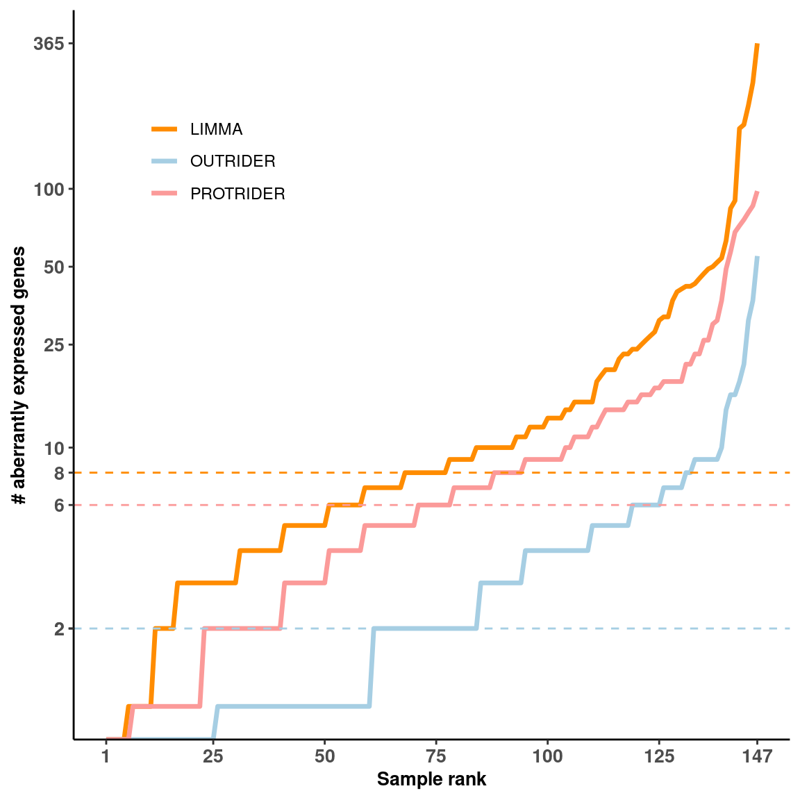

# load config
source(snakemake@input$config)
# sa <- fread('/s/project/mitoMultiOmics/multiOMICs_integration/raw_data/proteomics_annotation.tsv')
# limma <- readRDS('/s/project/mitoMultiOmics/multiOMICs_integration/processed_data/limma/LIMMA_results.rds') %>% as.data.table()
# protr <- readRDS("/s/project/mitoMultiOmics/multiOMICs_integration/processed_data/protrider/PROTRIDER_results.rds") %>% as.data.table()
# outrider <- readRDS("/s/project/mitoMultiOmics/multiOMICs_integration/processed_data/outrider/OUTRIDER_results.rds") %>% as.data.table()
# Load sample annotation
sa <- fread(snakemake@input$sample_annotation)
sa <- sa[USE_FOR_PROTEOMICS_PAPER == T]
# Keep only full sample list
sa <- data.frame(sa[, "SAMPLE_ID"])
# Create outliers per sample df
os <- data.frame()
##################
# Load LIMMA results
##################
limma <- readRDS(snakemake@input$limma_results) %>% as.data.table()
limma <- limma[!is.na(PROTEIN_PVALUE)]
paste("Number of outliers in LIMMA:" ,nrow(limma[ PROTEIN_outlier == T]))
## [1] "Number of outliers in LIMMA: 3092"
# Keep only cases with outliers and count by sample
osx <- limma[ PROTEIN_outlier == T , .N, by = c('SAMPLE_ID')]
osx <- as.data.table(merge(sa, osx, by = "SAMPLE_ID", all.x = T))
# Set N outliers as 0 for cases wo outliers
osx[is.na(N), N:= 0]
osx <- osx[order(N),]
osx$Method <- rep("LIMMA", nrow(osx) )
osx$Rank <- seq( 1: nrow(osx) )
os <- rbind(os, osx)
##################
#Load PROTRIDER results
##################
protr <- readRDS(snakemake@input$protrider_results) %>% as.data.table()
protr <- protr[!is.na(PROTEIN_PVALUE)]
paste("Number of outliers in PROTRIDER:", nrow(protr[ PROTEIN_outlier == T]) )
## [1] "Number of outliers in PROTRIDER: 1635"
osx <- protr[ PROTEIN_outlier == T , .N, by = c('SAMPLE_ID')]
osx <- as.data.table(merge(sa, osx, by = "SAMPLE_ID", all.x = T))
osx[is.na(N), N:= 0]
osx <- osx[order(N),]
osx$Method <- rep("PROTRIDER", nrow(osx) )
osx$Rank <- seq( 1: nrow(osx) )
os <- rbind(os, osx)
##################
#Load OUTRIDER results
##################
outrider <- readRDS(snakemake@input$outrider_results) %>% as.data.table()
outrider <- outrider[!is.na(RNA_PVALUE)]
paste("Number of outliers in OUTRIDER:", nrow(outrider[ RNA_outlier == T]) )
## [1] "Number of outliers in OUTRIDER: 583"
osx <- outrider[ RNA_outlier == T , .N, by = c('SAMPLE_ID')]
osx <- as.data.table(merge(sa, osx, by = "SAMPLE_ID", all.x = T))
osx[is.na(N), N:= 0]
osx <- osx[order(N),]
osx$Method <- rep("OUTRIDER", nrow(osx) )
osx$Rank <- seq( 1: nrow(osx) )
os <- rbind(os, osx)
###########################################################
Fig_S2e <- ggplot(os, aes(Rank , N, color = Method))+
geom_line( size = 1.2)+
theme_classic()+
scale_color_manual( values = c("OUTRIDER" = "#A6CEE3",
"PROTRIDER" = "#FB9A99",
"LIMMA" = "darkorange"))+
geom_hline(yintercept = round(median(os[Method == "LIMMA"]$N)), color = "darkorange", linetype = "dashed")+
geom_hline(yintercept = round(median(os[Method == "PROTRIDER"]$N)), color = "#FB9A99", linetype = "dashed")+
geom_hline(yintercept = round(median(os[Method == "OUTRIDER"]$N)), color = "#A6CEE3", linetype = "dashed")+
scale_y_continuous(breaks= c(2,
round(median(os[Method == "OUTRIDER"]$N)),
round(median(os[Method == "LIMMA"]$N)),
round(median(os[Method == "PROTRIDER"]$N)),
10,
25,
50,
100,
max(os$N)), trans='log2')+
scale_x_continuous(breaks= c(1, 25, 50, 75, 100, 125, 147), limits=c(1, nrow(sa)))+
xlab("Sample rank") +
ylab("# aberrantly expressed genes")+
theme(plot.title = element_text(hjust = 0.5),
axis.title.x= element_text( size=10, margin = NULL,face="bold"),
axis.title.y= element_text( size=10, margin = NULL,face="bold"),
axis.text.x = element_text(face="bold", size=10),
axis.text.y = element_text(face="bold", size=10),
legend.title = element_blank(),
legend.position = c(0.2, 0.8))
Fig_S2e

pdf("/s/project/mitoMultiOmics/multiOMICs_integration/Figures/Supplementary_figures/S_Fig2_e.pdf",
width = 6, height =6, useDingbats=FALSE )
print(Fig_S2e)
dev.off()
## png
## 2
IyctLS0KIycgdGl0bGU6IFN1cHBsZW1lbnRhcnkgRmlnIDJlIG91dGxpZXJzIHBlciBzYW1wbGUgCiMnIGF1dGhvcjogc21pcm5vdmQKIycgd2I6CiMnICBpbnB1dDogCiMnICAtIGNvbmZpZzogJ3NyYy9jb25maWcuUicKIycgIC0gc2FtcGxlX2Fubm90YXRpb246ICdgc20gY29uZmlnWyJBTk5PVEFUSU9OIl1gJwojJyAgLSBvdXRyaWRlcl9yZXN1bHRzOiAnYHNtIGNvbmZpZ1siUFJPQ19EQVRBIl0gKyAiL291dHJpZGVyL09VVFJJREVSX3Jlc3VsdHMucmRzImAnCiMnICAtIHByb3RyaWRlcl9yZXN1bHRzOiAnYHNtIGNvbmZpZ1siUFJPQ19EQVRBIl0gKyAiL3Byb3RyaWRlci9QUk9UUklERVJfcmVzdWx0cy5yZHMiYCcKIycgIC0gbGltbWFfcmVzdWx0czogJ2BzbSBjb25maWdbIlBST0NfREFUQSJdICsgIi9saW1tYS9MSU1NQV9yZXN1bHRzLnJkcyJgJwojJyAgb3V0cHV0OgojJyBvdXRwdXQ6IAojJyAgIGh0bWxfZG9jdW1lbnQ6CiMnICAgIGNvZGVfZm9sZGluZzogaGlkZQojJyAgICBjb2RlX2Rvd25sb2FkOiBUUlVFCiMnLS0tCgojIGxvYWQgY29uZmlnCnNvdXJjZShzbmFrZW1ha2VAaW5wdXQkY29uZmlnKQoKCiMgc2EgPC0gZnJlYWQoJy9zL3Byb2plY3QvbWl0b011bHRpT21pY3MvbXVsdGlPTUlDc19pbnRlZ3JhdGlvbi9yYXdfZGF0YS9wcm90ZW9taWNzX2Fubm90YXRpb24udHN2JykKIyBsaW1tYSA8LSByZWFkUkRTKCcvcy9wcm9qZWN0L21pdG9NdWx0aU9taWNzL211bHRpT01JQ3NfaW50ZWdyYXRpb24vcHJvY2Vzc2VkX2RhdGEvbGltbWEvTElNTUFfcmVzdWx0cy5yZHMnKSAlPiUgYXMuZGF0YS50YWJsZSgpCiMgcHJvdHIgPC0gcmVhZFJEUygiL3MvcHJvamVjdC9taXRvTXVsdGlPbWljcy9tdWx0aU9NSUNzX2ludGVncmF0aW9uL3Byb2Nlc3NlZF9kYXRhL3Byb3RyaWRlci9QUk9UUklERVJfcmVzdWx0cy5yZHMiKSAlPiUgYXMuZGF0YS50YWJsZSgpCiMgb3V0cmlkZXIgPC0gcmVhZFJEUygiL3MvcHJvamVjdC9taXRvTXVsdGlPbWljcy9tdWx0aU9NSUNzX2ludGVncmF0aW9uL3Byb2Nlc3NlZF9kYXRhL291dHJpZGVyL09VVFJJREVSX3Jlc3VsdHMucmRzIikgJT4lIGFzLmRhdGEudGFibGUoKQoKIyBMb2FkIHNhbXBsZSBhbm5vdGF0aW9uCnNhIDwtIGZyZWFkKHNuYWtlbWFrZUBpbnB1dCRzYW1wbGVfYW5ub3RhdGlvbikKc2EgPC0gc2FbVVNFX0ZPUl9QUk9URU9NSUNTX1BBUEVSID09IFRdCiMgS2VlcCBvbmx5IGZ1bGwgc2FtcGxlIGxpc3QKc2EgPC0gZGF0YS5mcmFtZShzYVssICJTQU1QTEVfSUQiXSkKCiMgQ3JlYXRlIG91dGxpZXJzIHBlciBzYW1wbGUgZGYKb3MgPC0gZGF0YS5mcmFtZSgpIAoKIyMjIyMjIyMjIyMjIyMjIyMjCiMgTG9hZCBMSU1NQSByZXN1bHRzCiMjIyMjIyMjIyMjIyMjIyMjIwoKbGltbWEgPC0gcmVhZFJEUyhzbmFrZW1ha2VAaW5wdXQkbGltbWFfcmVzdWx0cykgICU+JSBhcy5kYXRhLnRhYmxlKCkKbGltbWEgPC0gbGltbWFbIWlzLm5hKFBST1RFSU5fUFZBTFVFKV0KcGFzdGUoIk51bWJlciBvZiBvdXRsaWVycyBpbiBMSU1NQToiICxucm93KGxpbW1hWyBQUk9URUlOX291dGxpZXIgPT0gVF0pKQoKIyBLZWVwIG9ubHkgY2FzZXMgd2l0aCBvdXRsaWVycyBhbmQgY291bnQgYnkgc2FtcGxlCm9zeCA8LSBsaW1tYVsgUFJPVEVJTl9vdXRsaWVyID09IFQgLCAuTiwgYnkgPSBjKCdTQU1QTEVfSUQnKV0Kb3N4IDwtIGFzLmRhdGEudGFibGUobWVyZ2Uoc2EsIG9zeCwgYnkgPSAiU0FNUExFX0lEIiwgYWxsLnggPSBUKSkKIyBTZXQgTiBvdXRsaWVycyBhcyAwIGZvciBjYXNlcyB3byBvdXRsaWVycwpvc3hbaXMubmEoTiksIE46PSAwXQpvc3ggPC0gb3N4W29yZGVyKE4pLF0Kb3N4JE1ldGhvZCA8LSByZXAoIkxJTU1BIiwgbnJvdyhvc3gpICkKb3N4JFJhbmsgPC0gc2VxKCAxOiBucm93KG9zeCkgKQpvcyA8LSByYmluZChvcywgb3N4KQoKCiMjIyMjIyMjIyMjIyMjIyMjIwojTG9hZCBQUk9UUklERVIgcmVzdWx0cwojIyMjIyMjIyMjIyMjIyMjIyMKcHJvdHIgPC0gcmVhZFJEUyhzbmFrZW1ha2VAaW5wdXQkcHJvdHJpZGVyX3Jlc3VsdHMpICU+JSBhcy5kYXRhLnRhYmxlKCkKCnByb3RyIDwtIHByb3RyWyFpcy5uYShQUk9URUlOX1BWQUxVRSldCnBhc3RlKCJOdW1iZXIgb2Ygb3V0bGllcnMgaW4gUFJPVFJJREVSOiIsIG5yb3cocHJvdHJbIFBST1RFSU5fb3V0bGllciA9PSBUXSkgKQoKb3N4IDwtIHByb3RyWyBQUk9URUlOX291dGxpZXIgPT0gVCAsIC5OLCBieSA9IGMoJ1NBTVBMRV9JRCcpXQpvc3ggPC0gYXMuZGF0YS50YWJsZShtZXJnZShzYSwgb3N4LCBieSA9ICJTQU1QTEVfSUQiLCBhbGwueCA9IFQpKQpvc3hbaXMubmEoTiksIE46PSAwXQpvc3ggPC0gb3N4W29yZGVyKE4pLF0Kb3N4JE1ldGhvZCA8LSByZXAoIlBST1RSSURFUiIsIG5yb3cob3N4KSApCm9zeCRSYW5rIDwtIHNlcSggMTogbnJvdyhvc3gpICkKb3MgPC0gcmJpbmQob3MsIG9zeCkKCgojIyMjIyMjIyMjIyMjIyMjIyMKI0xvYWQgT1VUUklERVIgcmVzdWx0cwojIyMjIyMjIyMjIyMjIyMjIyMKCgpvdXRyaWRlciA8LSByZWFkUkRTKHNuYWtlbWFrZUBpbnB1dCRvdXRyaWRlcl9yZXN1bHRzKSAlPiUgYXMuZGF0YS50YWJsZSgpCgpvdXRyaWRlciA8LSBvdXRyaWRlclshaXMubmEoUk5BX1BWQUxVRSldCnBhc3RlKCJOdW1iZXIgb2Ygb3V0bGllcnMgaW4gT1VUUklERVI6IiwgbnJvdyhvdXRyaWRlclsgUk5BX291dGxpZXIgPT0gVF0pICkKCgpvc3ggPC0gb3V0cmlkZXJbIFJOQV9vdXRsaWVyID09IFQgLCAuTiwgYnkgPSBjKCdTQU1QTEVfSUQnKV0Kb3N4IDwtIGFzLmRhdGEudGFibGUobWVyZ2Uoc2EsIG9zeCwgYnkgPSAiU0FNUExFX0lEIiwgYWxsLnggPSBUKSkKb3N4W2lzLm5hKE4pLCBOOj0gMF0Kb3N4IDwtIG9zeFtvcmRlcihOKSxdCm9zeCRNZXRob2QgPC0gcmVwKCJPVVRSSURFUiIsIG5yb3cob3N4KSApCm9zeCRSYW5rIDwtIHNlcSggMTogbnJvdyhvc3gpICkKb3MgPC0gcmJpbmQob3MsIG9zeCkKCgoKIyMjIyMjIyMjIyMjIyMjIyMjIyMjIyMjIyMjIyMjIyMjIyMjIyMjIyMjIyMjIyMjIyMjIyMjIyMjIyMKRmlnX1MyZSA8LSBnZ3Bsb3Qob3MsIGFlcyhSYW5rICwgTiwgY29sb3IgPSBNZXRob2QpKSsKICBnZW9tX2xpbmUoIHNpemUgPSAxLjIpKwogIHRoZW1lX2NsYXNzaWMoKSsKICBzY2FsZV9jb2xvcl9tYW51YWwoIHZhbHVlcyA9IGMoIk9VVFJJREVSIiA9ICIjQTZDRUUzIiwKICAgICAgICAgICAgICAgICAgICAgICAgICAgICAgICAgIlBST1RSSURFUiIgPSAiI0ZCOUE5OSIsCiAgICAgICAgICAgICAgICAgICAgICAgICAgICAgICAgICJMSU1NQSIgPSAiZGFya29yYW5nZSIpKSsKCiAgZ2VvbV9obGluZSh5aW50ZXJjZXB0ID0gcm91bmQobWVkaWFuKG9zW01ldGhvZCA9PSAiTElNTUEiXSROKSksIGNvbG9yID0gImRhcmtvcmFuZ2UiLCBsaW5ldHlwZSA9ICJkYXNoZWQiKSsKICBnZW9tX2hsaW5lKHlpbnRlcmNlcHQgPSByb3VuZChtZWRpYW4ob3NbTWV0aG9kID09ICJQUk9UUklERVIiXSROKSksIGNvbG9yID0gIiNGQjlBOTkiLCBsaW5ldHlwZSA9ICJkYXNoZWQiKSsKICBnZW9tX2hsaW5lKHlpbnRlcmNlcHQgPSByb3VuZChtZWRpYW4ob3NbTWV0aG9kID09ICJPVVRSSURFUiJdJE4pKSwgY29sb3IgPSAiI0E2Q0VFMyIsIGxpbmV0eXBlID0gImRhc2hlZCIpKwoKICBzY2FsZV95X2NvbnRpbnVvdXMoYnJlYWtzPSBjKDIsIAogICAgICAgICAgICAgICAgICAgICAgICAgICAgICAgcm91bmQobWVkaWFuKG9zW01ldGhvZCA9PSAiT1VUUklERVIiXSROKSksIAogICAgICAgICAgICAgICAgICAgICAgICAgICAgICAgcm91bmQobWVkaWFuKG9zW01ldGhvZCA9PSAiTElNTUEiXSROKSksCiAgICAgICAgICAgICAgICAgICAgICAgICAgICAgICByb3VuZChtZWRpYW4ob3NbTWV0aG9kID09ICJQUk9UUklERVIiXSROKSksIAogICAgICAgICAgICAgICAgICAgICAgICAgICAgICAgMTAsCiAgICAgICAgICAgICAgICAgICAgICAgICAgICAgICAyNSwKICAgICAgICAgICAgICAgICAgICAgICAgICAgICAgIDUwLCAKICAgICAgICAgICAgICAgICAgICAgICAgICAgICAgIDEwMCwKICAgICAgICAgICAgICAgICAgICAgICAgICAgICAgIG1heChvcyROKSksICB0cmFucz0nbG9nMicpKwogIHNjYWxlX3hfY29udGludW91cyhicmVha3M9IGMoMSwgMjUsICA1MCwgIDc1LCAgMTAwLCAgMTI1LCAgMTQ3KSwgbGltaXRzPWMoMSwgbnJvdyhzYSkpKSsKICB4bGFiKCJTYW1wbGUgcmFuayIpICsgCiAgeWxhYigiIyBhYmVycmFudGx5IGV4cHJlc3NlZCBnZW5lcyIpKwogIHRoZW1lKHBsb3QudGl0bGUgPSBlbGVtZW50X3RleHQoaGp1c3QgPSAwLjUpLAogICAgICAgIGF4aXMudGl0bGUueD0gZWxlbWVudF90ZXh0KCBzaXplPTEwLCBtYXJnaW4gPSBOVUxMLGZhY2U9ImJvbGQiKSwKICAgICAgICBheGlzLnRpdGxlLnk9IGVsZW1lbnRfdGV4dCggc2l6ZT0xMCwgbWFyZ2luID0gTlVMTCxmYWNlPSJib2xkIiksCiAgICAgICAgYXhpcy50ZXh0LnggPSBlbGVtZW50X3RleHQoZmFjZT0iYm9sZCIsICBzaXplPTEwKSwKICAgICAgICBheGlzLnRleHQueSA9IGVsZW1lbnRfdGV4dChmYWNlPSJib2xkIiwgIHNpemU9MTApLAogICAgICAgIGxlZ2VuZC50aXRsZSA9IGVsZW1lbnRfYmxhbmsoKSwKICAgICAgICBsZWdlbmQucG9zaXRpb24gPSBjKDAuMiwgMC44KSkKCiMrIGZpZy53aWR0aD02LCBmaWcuaGVpZ2h0PTYKRmlnX1MyZQoKCnBkZigiL3MvcHJvamVjdC9taXRvTXVsdGlPbWljcy9tdWx0aU9NSUNzX2ludGVncmF0aW9uL0ZpZ3VyZXMvU3VwcGxlbWVudGFyeV9maWd1cmVzL1NfRmlnMl9lLnBkZiIsICAKICAgIHdpZHRoID0gNiwgaGVpZ2h0ID02LCAgdXNlRGluZ2JhdHM9RkFMU0UgKQpwcmludChGaWdfUzJlKSAKZGV2Lm9mZigpCgoKCgoK